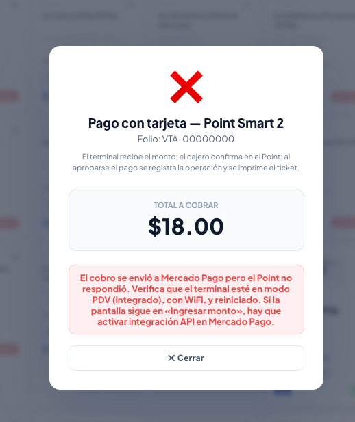
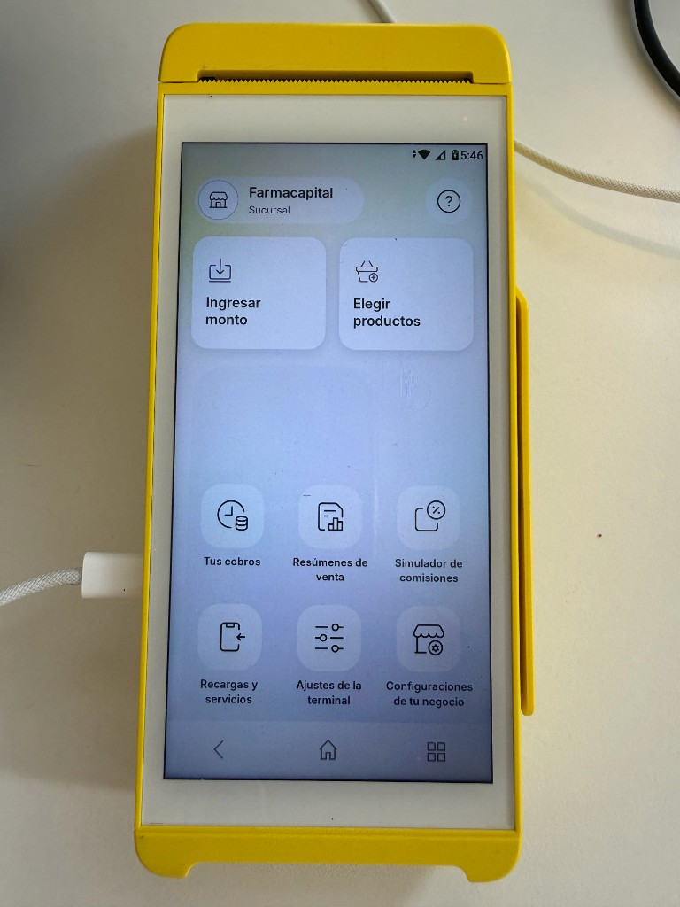
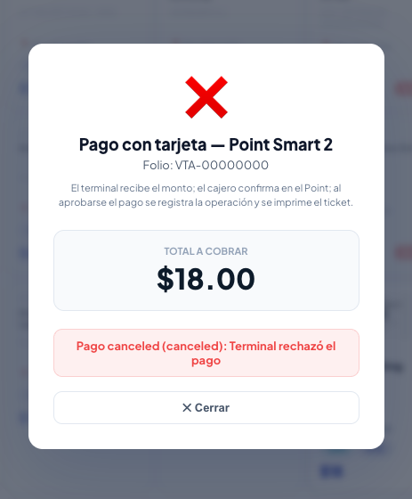
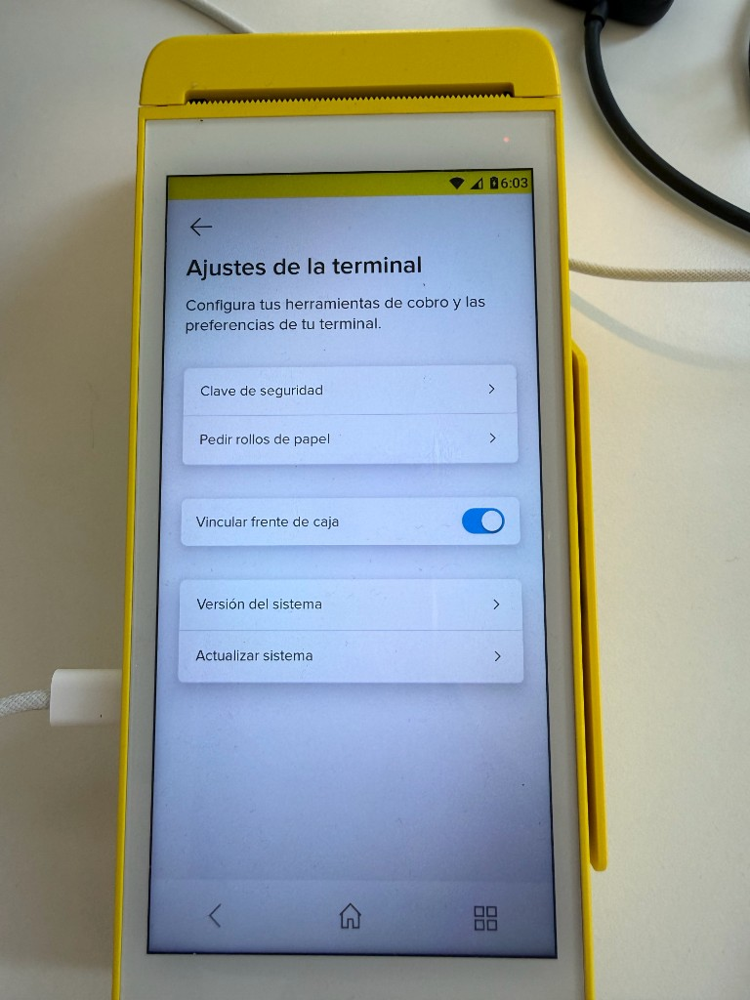

FarmaCapital · Point Smart 2 · Serial N950NCCC05728001 · Terminal ID NEWLAND_N950__N950NCCC05728001 · 22 jul 2026
createdat_terminal
Qué muestra: FarmaCapital envió $18.00 a Mercado Pago. Tras esperar, error: el Point no respondió. La orden quedó en API sin bajar al terminal.

Qué muestra: Al mismo tiempo, el Point sigue en pantalla principal («Ingresar monto» / «Elegir productos»). No aparece el monto de $18.00 enviado por API.

Mensaje: «Terminal rechazó el pago» — confirma que hubo intento de sync fallido.

Modo integrado activo (Vincular frente de caja encendido). No es un problema de configuración visible en el dispositivo.
Todas permanecen en created horas después. El terminal nunca las recibió (at_terminal).
| # | order_id | Estado | Monto | Referencia | Creada (UTC) |
|---|---|---|---|---|---|
| 1 | ORD01KY3GES14Z7BA7M809856CE82 | created | $18.00 | VTA-00000000 | 2026-07-21 23:33:56 |
| 2 | ORD01KY3GFCV4SZ4ZAXAVJNV7X6FD | created | $18.00 | VTA-00000000 | 2026-07-21 23:34:16 |
| 3 | ORD01KY3GHCWMB44C1869FWP0WQB1 | created | $1.00 | cleanup | 2026-07-21 23:35:22 |
| 4 | ORD01KY420PM94MPGX76N33S1SC9A | created | $1.00 | FC-DIAG-* | 2026-07-22 04:40:49 |
| 5 | ORD01KY420WJ1YFRD45TA0RGQ1CZE | created | $1.00 | FC-DIAG-* | 2026-07-22 04:40:55 |
| 6 | ORD01KY422VPC5JH6BQCCWS0X2QMG | created | $1.00 | FC-DIAG-* | 2026-07-22 04:42:00 |
| 7 | ORD01KY428XMBB28SEVNNWXC5QHVD | created | $1.00 | FC-DIAG-* | 2026-07-22 04:45:18 |
| order_id | ORD01KY42TE8CS0G3JERSKSVRCGG6 |
|---|---|
| Referencia | VTA-MP-SOPORTE-001 · $18.00 MXN |
| Resultado 60 seg | created → created (nunca at_terminal) |
| Terminal | Sin cambio en pantalla |
Orden ORD01KY440HG7DF67EHT203V3GEF1 — consulta cada 5 segundos durante 30 s:
created. Se solicita limpieza de cola y revisión de sync backend ↔ dispositivo.
FarmaCapital — Evidencia visual para soporte Mercado Pago · Jul 2026